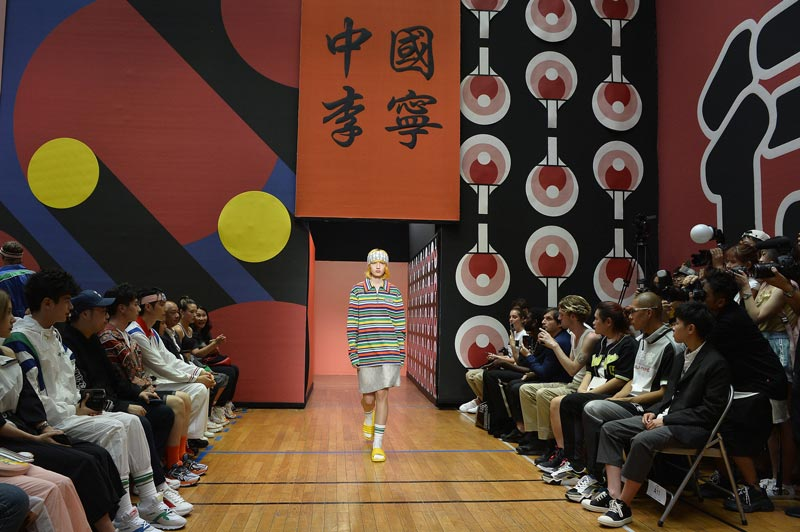

Історія бренду LI-NING
Li-Ning Company Limited Group або просто Li-Ning («Лі Нін») — китайська компанія, названа на ім'я свого засновника, яка виробляє спортивне взуття та спортивні товари. Один з провідних виробників спортивного взуття та одягу в Китаї зі штаб-квартирою у Пекіні, з великою роздрібною мережею у всьому світі.
Коротка біографія засновника бренду Li-Ning
Біля джерел компанії стоїть гімнаст світового класу, велика китайська гордість Лі Нін. Він народився 10 березня 1963 року в Лючжоу, Гуансі, в сім'ї чжуанського вчителя музики. Батько бачив у сина співака, але доля приготувала йому іншу долю. Після того, як хлопчик серйозно травмував голосові зв'язки і на кілька днів втратив голос, він піднявся на турнік.
У віці шести років Лі почав серйозно тренуватися і в 1980 був обраний до національної збірної Китаю з гімнастики. 1982 року він виграв шість із семи медалей, присуджених на змаганнях шостого Кубка світу з гімнастики, за що отримав прізвисько «Принц гімнастики».
У 1984 році Лі виграв шість медалей на Літніх Олімпійських іграх у Лос-Анджелесі, перших Олімпійських іграх, у яких брала участь Китайська Народна Республіка. Він узяв три золота, два срібла та одну бронзу, що зробило його спортсменом із найбільшою кількістю медалей на Олімпійських іграх.
Чотири роки пізніше Нін, будучи спортсменів у відставці, був змушений очолити китайську національну збірну з гімнастики на Олімпійських іграх у Сеулі, про що неодноразово пошкодував. На цей момент він отримав безліч спортивних травм, і його гімнастична кар'єра йшла до заходу сонця. Успіх, на який вкотре розраховував «король гімнастики Китаю», зробити не вдалося.
Незважаючи на те, що професійна кар'єра гімнасту триває приблизно 10 років, Лі Нін брав участь та перемагав у змаганнях зі спортивної гімнастики протягом 17 років. За ці роки він виграв 14 чемпіонатів світу та 106 золотих медалей на змаганнях у країні та за кордоном.
До кінця 1988 Лі Нін оголосив про остаточне завершення своєї гімнастичної кар'єри.
1999 року Всесвітня асоціація спортивних кореспондентів назвала його одним із «Кращих спортсменів світу» 20-го століття, а 2000 року Лі був внесений до Міжнародної зали слави гімнастики, ставши першим китайським спортсменом, який потрапив туди.
Історія створення бренду Li-Ning
У 1990 році Лі Нін заснував компанію Li-Ning Co., Ltd., покликану надати китайським спортсменам національний бренд, продукцію якого можна гордо носити на світовій арені Олімпійських ігор, і тим самим познайомити Захід із справжньою китайською культурою.
У 2005 році Лі Нін створив спільне підприємство з французькою компанією з виробництва спортивного одягу Aigle, що дозволило йому заволодіти ексклюзивним правом стати єдиним дистриб'ютором продукції Aigle у Китаї протягом 50 років.
До кінця 2007 року Li-Ning був четвертим у світі брендом спортивного одягу із ринковою вартістю 3,861 мільярда доларів США. На березень 2007 року налічувалося 4297 роздрібних магазинів Li-Ning.
На церемонії відкриття літніх Олімпійських ігор 2008 року, що проходили в Пекіні, Лі Нін запалив олімпійський вогонь, злетівши під дах стадіону і «пробігши» коло в повітрі, підвішений на тросах.
У січні 2010 року відбулося відкриття штаб-квартири в США та флагманського магазину у Портленді, штат Орегон. Цього ж року в рамках «Відродження» бренду Li-Ning випустила новий логотип та новий слоган «让改变发生», який можна дослівно перекласти як «Нехай відбудуться зміни».
У січні 2011 року з метою впізнаваності бренду та збільшення обсягу продажів на західному ринку, Li-Ning уклала партнерство з чиказькою компанією електронної комерції та цифрового маркетингу Acquity Group.
У липні 2011 року навколо бренду вибухнув скандал. Li-Ning, поряд з іншими великими брендами одягу, включаючи Abercrombie & Fitch, Adidas, Bauer Hockey, Calvin Klein, Converse, Cortefiel, H&M, Lacoste, Nike, Phillips Van Heusen Corporation (PVH Corp), Puma, звинуватили у співпраці з постачальниками, які, згідно з висновками звіту, сприяють забрудненню річок Янцзи та Чжуцзян. В результаті експертизи з'ясувалося, що взяті проби вод з річок Янцзи та Чжуцзян рясніють небезпечними та стійкими хімічними речовинами, що руйнують гормони, включаючи алкілфеноли, перфторовані сполуки та перфтороктановий сульфонат.
У квітні 2012 року торгова марка була удостоєна найвищої нагороди «За визначний внесок у стандартизацію якості» у трикотажному відділенні на першому засіданні Третього національного технічного комітету зі стандартизації текстилю, що відбулося в Чжухаї, провінція Гуандун.
У зв'язку з короткостроковою орієнтацією на скорочення продажів, очищення запасів та зменшення кількості магазинів у 2013 році виручка компанії склала 2 906 мільйонів юанів, що на 24,6 % менше у порівнянні з аналогічним періодом минулого року. За прогнозами аналітиків у 2014 році чистий збиток мав становити до 820 мільйонів юанів (13,19 мільйона доларів США). У цей час компанія була збитковою.
У 2017 році було засновано підрозділ зі створення модного одягу преміум-класу для подіумних показів. У нових колекціях основна увага акцентувалася на спортивній спадщині бренду, революційних інноваціях та унікальній та автентичній китайській точці зору. Спочатку вироби продавали виключно в роздрібних магазинах предметів розкоші в Китаї. Однак дуже швидко модні колекції Li-Ning привернули міжнародний інтерес і відтоді були представлені в усьому світі через вражаючу глобальну мережу постачальників, починаючи від престижних універмагів, таких як Selfridges до модних концептуальних магазинів, таких як LN-CC у Лондоні.
У червні 2019 року представники бренду оголосили про співпрацю із берлінським дизайнерським колективом підприємства Random Identities дизайнера Стефано Пілаті. З легкої руки італійського кутюр'є було створено ультрасучасне колабораційне спортивне взуття із вбудованою 3-швидкісною світлодіодною системою освітлення. Вона увійшла до колекції весна/літо 2020 та була продемонстрована під час Тижня чоловічої моди в Парижі. Коли світло в залі пригасили, на подіум вийшли моделі, взуті в кросівки, що висвітлюють затемнений виставковий простір.

В даний час Лі Нін займає крісло голови та виконавчого директора компанії, яка володіє величезною мережею роздрібних магазинів, а також надає можливість працювати за франшизою. На додаток до основного бренду Li-Ning, однойменна група виробляє, розробляє, просуває, розповсюджує та продає низку інших спортивних товарів, керованих власними, ліцензованими або спільними підприємствами/асоційованими підприємствами, створеними з третіми сторонами групи.
Li-Ning: спонсорство
Li-Ning був офіційним маркетинговим партнером Національної баскетбольної асоціації та надавав/надавав спонсорську підтримку багатьом талановитим гравцям NBA, серед яких: Берон Девіс, Шакіл О'Ніл, Деймон Джонс, Хосе Мануель Кальдерон, Клієнтоні Ерлі, Глен Алан Робан Дуейн Уейд та Сі Джей Макколлум.
2006 року американський баскетболіст, коментатор, баскетбольний телеексперт, репер, а також актор, Шакіл О'Ніл, підписав з Li-Ning чотирирічний контракт на суму 1,25 мільйона доларів США.
З 2006 по 2008 р. «Лі Нін» виступав спонсором національної збірної В'єтнаму з футболу, коли В'єтнам досяг помітних успіхів у Кубку Азії 2007 року та чемпіонаті AFF 2008 року.
У 2010 році бренд став офіційним спонсором збірної Таджикистану з тенісу, а також таджицького футбольного клубу «Істіклол».
У вересні 2012 року Li-Ning підписав контракт із суперзіркою НБА Дуейном Уейдом. Вартість операції склала 10 мільйонів доларів.
Лі Нін разом з Sunlight Sports Pvt. Ltd. (представник та дистриб'ютор Li-Ning в Індії) підписали спонсорські угоди з професійними індійськими гравцями у бадмінтон, зокрема з Пусарла Венката Сіндху та Шрікантом Кідамбі.